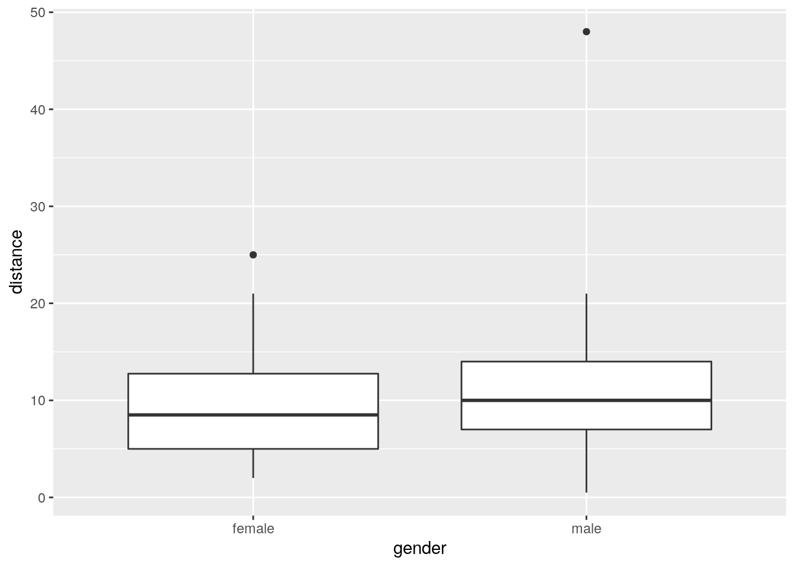
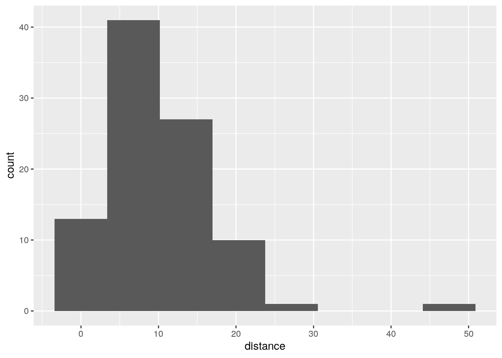

6.2 Parking close to the curb
In 2009, the Toronto Star commissioned a survey to address the issue of who is better at parking a car: men or women. The researchers recorded 93 drivers who were parallel-parking their car in downtown Toronto, and for each driver, recorded the distance between the car and the curb, in inches, when the driver was finished parking their car. The data are in an Excel spreadsheet, http://www.utsc.utoronto.ca/~butler/c32/parking.xlsx. (Let me know if you cannot handle this format.) Click on the link. The data will probably download automatically. Check the folder on your computer where things get downloaded. If the spreadsheet is just displayed and not downloaded, save it somewhere on your computer.
- There are two sheets in this spreadsheet workbook. They are of the same data in two different formats. Take a look at Sheet 1 and Sheet 2. Describe the format of the data in each case. Which will be the most suitable data layout, bearing in mind that one of the first things we do is to make side-by-side boxplots of parking distances for males and females? Explain briefly.
Solution
The data in Sheet 1 has one column of parking distances for
males, and another for females. This is often how you see data
of this sort laid out. Sheet 2 has one column of parking
distances, all combined together, and a second column indicating
the gender of the driver whose distance is in the first column.
If you look back at the kind of data we’ve used to make
side-by-side boxplots, it’s always been in the format of Sheet
2: one column containing all the values of the variable we’re
interested in, with a second column indicating which group each
observation belongs to (“group” here being
“gender of driver”).
So we need to use the data in Sheet 2, because the
data in Sheet 1 are not easy to handle with R.
The layout of Sheet 2 is the way R likes to do most things:
so-called “long format” with a lot of rows and not many
columns. This is true for descriptive stuff: side-by-side
boxplots or histograms or means by group, as well as modelling
such as (here) a two-sample \(t\)-test, or (in other
circumstances, as with several groups) a one-way analysis of
variance.
Hadley Wickham, the guy behind the tidyverse, likes to
talk about “tidy data” (like Sheet 2), with each column
containing a variable, and “untidy data” (like Sheet 1), where
the two columns are the same thing (distances), but under
different circumstances (genders). As we’ll see later, it is
possible to convert from one format to the other. Usually you
want to make untidy data tidy (the function for this is called
gather).
- Read your preferred sheet directly into R, without
using a
.csvfile. (There is a clue in the lecture notes, in the section about reading in files.) If you get stuck, make a.csvfile and read that in.
Solution
The direct way is to use the package readxl. This has a
read_excel that works the same way as any of the other
read_ functions. You’ll have to make sure that you
read in sheet 2, since that’s the one you want.
There is some setup first. There are a couple of ways you can do that:
Download the spreadsheet to your computer, and upload it to your project on R Studio Cloud (or, if you are running R Studio on your computer, use something like
file.chooseto get the file from wherever it got downloaded to).Use the function
download.fileto get the file from the URL and store it in your project folder directly. This also works in R Studio Cloud, and completely by-passes the download-upload steps that you would have to do otherwise. (I am grateful to Rose Gao for this idea.) Here is how you can usedownload.filehere:
my_url='http://www.utsc.utoronto.ca/~butler/c32/parking.xlsx'
local="parking.xlsx"
download.file(my_url, local, mode="wb")When you’ve gotten the spreadsheet into your project folder via one of those two ways, you go ahead and do this:
## # A tibble: 93 x 2
## distance gender
## <dbl> <chr>
## 1 0.5 male
## 2 1 male
## 3 1.5 male
## 4 1.5 male
## 5 1.5 male
## 6 3 male
## 7 3.5 male
## 8 5 male
## 9 6 male
## 10 6 male
## # ... with 83 more rowsYou have to do it this way, using the version of the spreadsheet on
your computer, since read_excel won’t take a
URL, or if it does, I can’t make it work. I put the spreadsheet in R Studio’s
current folder, so I could read it in by name, or you can do the
f=file.choose() thing, find it, then read it in.
The sheet= thing can take either a number (as here: the
second sheet in the workbook), or a name (whatever name the sheet has
on its tab in the workbook).
Extra: Rose actually came up with a better idea, which I will show you and explain:
What tempfile() does is to create a temporary file to hold the
spreadsheet that you are about to download. After downloading the
spreadsheet to the temporary file, you then use read_excel to
read from the temporary file into the data frame.
The advantage of this approach is that the temporary file disappears
as soon as you close R, and so you don’t have a copy of the
spreadsheet lying around that you don’t need (once you have created
the data frame that I called parking, anyway).
If you are wondering about that mode thing on
download.file: files are of two different types, “text”
(like the text of an email, that you can open and look at in something
like Notepad), and “binary” that you can’t look at directly, but for
which you need special software like Word or Excel to decode it for
you. The first character in mode is either
w for “write a new file”, which is what we want here, or
a for “append”, which would mean adding to the end of a
file that already exists. Thus mode="wb" means
“create a new binary file”.
End of Extra.
If you can’t make any of this work, then do it in two steps:
save the appropriate sheet as a .csv
file, and then read the .csv file using
read_csv. If you experiment, you’ll find that saving a
spreadsheet workbook as .csv only saves the sheet
you’re looking at, so make sure you are looking at sheet 2
before you Save As .csv. I did that, and called my
saved .csv parking2.csv (because it was from
sheet 2, but you can use any name you like).
Then I read this into R thus:
## Parsed with column specification:
## cols(
## distance = col_double(),
## gender = col_character()
## )## # A tibble: 93 x 2
## distance gender
## <dbl> <chr>
## 1 0.5 male
## 2 1 male
## 3 1.5 male
## 4 1.5 male
## 5 1.5 male
## 6 3 male
## 7 3.5 male
## 8 5 male
## 9 6 male
## 10 6 male
## # ... with 83 more rowsThe read-in data frame parking
has 93 rows (\(47+46=93\) drivers) and two columns: the distance from
the curb that the driver ended up at, and the gender of the
driver. This is as the spreadsheet Sheet 2 was, and the first few
distances match the ones in the spreadsheet.
If I were grading this, you’d get some credit for the .csv
route, but I really wanted you to figure out how to read the Excel
spreadsheet directly, so that’s what would be worth full marks.
You might want to check that you have some males and some females, and how many of each, which you could do this way:
## # A tibble: 2 x 2
## gender n
## <chr> <int>
## 1 female 47
## 2 male 46- Obtain side-by-side boxplots of parking distances for males and females. Does one gender seem to be better at parking than the other? Explain briefly.
Solution
With the right data set, this is a piece of cake:

The outcome variable is distance from the curb, so smaller should be better (more accurate parking). With that in mind, the median for females is a little smaller than for males (about 8.5 vs. about 10), so it seems that on average females are more accurate parkers than males are. The difference is small, however (and so you might be wondering at this point whether it’s a statistically significant difference — don’t worry, that’s coming up).
Before I leave this one, I want to show you something else: above-and-below histograms, as another way of comparing males and females (two or more groups, in general). First, we make a histogram of all the distances, without distinguishing by gender:

That big outlier is the very inaccurate male driver.
Now, how do we get a separate histogram for each
gender? In ggplot, separate plots for each
“something” are called facets, and the way to get facets
arranged as you want them is called facet_grid. Let me show you
the code first, and then explain how it works:

facet_grid takes a “model formula” with a squiggle, with \(y\)
on the left and \(x\) on the right. We want to compare our two
histograms, one for males and one for females, and I think the best
way to compare histograms is to have one on top of the other. Note
that the same distance scale is used for both histograms, so
that it is a fair comparison. The above-and-below is accomplished by
having gender as the \(y\) in the arrangement of the facets, so
it goes before the squiggle. We don’t have any \(x\) in the arrangement
of the facets, and we tell ggplot this by putting a dot where
the \(x\) would be.
You can also use facet_wrap for this, but you have to be
more careful since you don’t have any control over how the histograms
come out (you probably get them side by side, which is not so helpful
for comparing distributions). You can make it work by using
ncol=1 to arrange “all” the histograms in one column:

The centres of both histograms are somewhere around 10, so it’s hard to see any real difference between males and females here. Maybe this is further evidence that the small difference we saw between the boxplots is really not worth getting excited about.
You might be concerned about how you know what to put with the
squiggle-thing in facet_grid and facet_wrap. The
answer is that facet_wrap only has something to the
right of the squiggle (which ggplot then decides how to
arrange), but facet_grid must have something on
both sides of the squiggle (how to arrange in the \(y\) direction
on the left, how to arrange in the \(x\) direction on the right), and if
you don’t have anything else to put there, you put a dot. Here’s my
facet_grid code from above, again:
We wanted gender to go up and down, and we had nothing to go left and
right, hence the dot. Contrast that with my facet_wrap
code:
This says “make a separate facet for each gender”, but it doesn’t say anything about how to arrange them. The choice of bins for my histogram(s) came from Sturges’ rule: with \(n\) being the number of observations, you use \(k\) bins where \(k=\log_2(n)+1\), rounded up. If we were to make a histogram of all the parking distances combined together, we would have \(n=47+48=95\) observations, so we should use this many bins:
## [1] 7.569856Round this up to 8. (The second thing in log is the base of
the logs, if you specify it, otherwise it defaults to \(e\) and gives
you “natural” logs.) I seem to have the powers of 2 in my head, so I
can do it mentally by saying ``the next power of 2 is 128, which is
\(2^7\), so I need \(7+1=8\) bins.’’
Or:
## [1] 8Sturges’ rule tends to produce not enough bins if \(n\) is small, so be prepared to increase it a bit if you don’t have much data. I think that gives a fairly bare-bones picture of the shape: skewed to the right with outlier.
The other rule we saw was Freedman-Diaconis:
## [1] 14and that leads to this histogram:

That gives rather more detail (a lot more bars: the binwidth in the Sturges-rule histogram is about 7, or twice what you see here), but in this case the overall story is about the same.
In the case of faceted histograms, you would want to apply a rule that
uses the number of observations in each histogram. The facets
might have quite different numbers of observations, but you can only
use one binwidth (or bins), so you may have to
compromise. For example, using Sturges’ rule based on 47 observations
(the number of males; the number of females is one more):
## [1] 6.554589and so each facet should have that many bins, rounded up. That’s where
I got my 7 for the facetted histogram from. This one doesn’t work
immediately with nclass.Sturges, because we do not have
one column whose length is the number of observations we want:
we have one column of distances that are males and females mixed
up. To do that, filter one of the genders first:
## [1] 7I used the “dot” trick again, which you can read as “it”: `fromparking`, take only the rows for the females, and with it,
give me the number of bins for a histogram by Sturges’ rule.’’
- Explain briefly why this is two independent samples rather than matched pairs.
Solution
There is no way to pair any male with a corresponding female, because they are unrelated people. You might also notice that there are not even the same number of males and females, so there can be no way of pairing them up without leaving one over. (In general, if the two samples are paired, there must be the same number of observations in each; if there are different numbers in each, as here, they cannot be paired.) If you want that more mathematically, let \(n_1\) and \(n_2\) be the two sample sizes; then: \[ \mbox{Paired} \Longrightarrow n_1=n_2 \]
from which it follows logically (the “contrapositive”) that
\[ n_1 \ne n_2 \Longrightarrow \mbox{not paired} \] You’ll note from the logic that if the two sample sizes are the same, that tells you nothing about whether it’s paired or independent samples: it could be either, and in that case you have to look at the description of the data to decide between them.
Here, anything that gets at why the males and females cannot be paired up is good.
- Run a suitable \(t\)-test for comparing parking distances for males and females. What do you conclude, in the context of the data?
Solution
A two-sample \(t\)-test. I think either the Welch or the pooled one can be justified (and I would expect them to give similar answers). You can do the Welch one either without comment or by asserting that the boxplots show different spreads; if you are going to do the pooled one, you need to say that the spreads are “about equal”, by comparing the heights of the boxes on the boxplots:
##
## Welch Two Sample t-test
##
## data: distance by gender
## t = -1.3238, df = 79.446, p-value = 0.1894
## alternative hypothesis: true difference in means is not equal to 0
## 95 percent confidence interval:
## -4.5884103 0.9228228
## sample estimates:
## mean in group female mean in group male
## 9.308511 11.141304This is the Welch-Satterthwaite version of the test, the one that does not assume equal SDs in the two groups. The P-value of 0.1894 is not small, so there is no evidence of any difference in parking accuracy between males and females.
Or, this being the pooled one:
##
## Two Sample t-test
##
## data: distance by gender
## t = -1.329, df = 91, p-value = 0.1872
## alternative hypothesis: true difference in means is not equal to 0
## 95 percent confidence interval:
## -4.5722381 0.9066506
## sample estimates:
## mean in group female mean in group male
## 9.308511 11.141304You might have thought, looking at the boxplots, that the groups had about the same SD (based, for example, on noting that the two boxes were about the same height, so the IQRs were about the same). In that case, you might run a pooled \(t\)-test, which here gives an almost identical P-value of 0.1872, and the exact same conclusion.
- Why might you have some doubts about the \(t\)-test that you just did? Explain briefly.
Solution
The two-sample \(t\)-test is based on an assumption of normally-distributed data within each group. If you go back and look at the boxplots, you’ll see either (depending on your point of view) that both groups are right-skewed, or that both groups have outliers, neither of which fits a normal distribution. The outlier in the male group is particularly egregious. So I think we are entitled to question whether a two-sample \(t\)-test is the right thing to do. Having said that, we should go back and remember that the \(t\)-tests are “robust to departures from normality” (since we are working with the Central Limit Theorem here), and therefore that this test might be quite good even though the data are not normal, because the sample sizes of 40-plus are large (by the standards of what typically makes the Central Limit Theorem work for us). So it may not be as bad as it seems. A common competitor for the two-sample \(t\)-test is the Mann-Whitney test. This doesn’t assume normality, but it does assume symmetric distributions, which it’s not clear that we have here. I like a test called Mood’s Median Test, which is kind of the two-sample equivalent of the sign test (which we will also see later). It goes like this: Work out the overall median of all the distances, regardless of gender:
## # A tibble: 1 x 1
## med
## <dbl>
## 1 9The overall median is 9.
Count up how many distances of each gender were above or below the overall median. (Strictly, I’m supposed to throw away any values that are exactly equal to the overall median, but I won’t here for clarity of exposition.)
##
## gender FALSE TRUE
## female 23 24
## male 27 19For example, 19 of the male drivers had a distance (strictly) less than 9. Both genders are pretty close to 50–50 above and below the overall median, which suggests that the males and females have about the same median. This can be tested (it’s a chi-squared test for independence, if you know that):
##
## Pearson's Chi-squared test
##
## data: tab
## X-squared = 0.89075, df = 1, p-value = 0.3453This is even less significant (P-value 0.3453) than the two-sample \(t\)-test, and so is consistent with our conclusion from before that there is actually no difference between males and females in terms of average parking distance. The Mood’s median test is believable because it is not affected by outliers or distribution shape.
- The Toronto Star in its report said that females are more accurate at parking their cars. Why do you think they concluded that, and do you think they were right to do so? Explain briefly.
Solution
The conclusion from the boxplots was that the female median distance was less than the males, slightly, in this sample. That is probably what the Star seized on. Were they right? Well, that was why we did the test of significance. We were trying to see whether this observed difference between males and females was “real” (would hold up if you looked at “all” male and female drivers) or “reproducible” (you would expect to see it again if you did another study like this one). The large, non-significant P-values in all our tests tell us that the difference observed here was nothing more than chance. So it was not reasonable to conclude that females generally are more accurate at parallel-parking than males are.